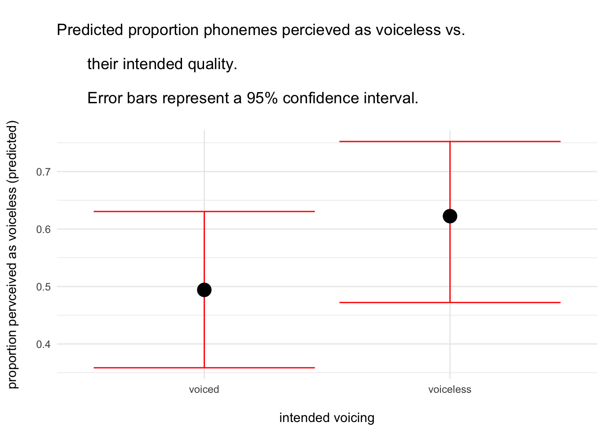

We will be working with perception data from one of my own experiments (Roettger et al. 2014).
In this study, we investigated incomplete neutralization (IN). IN refers to phenomena in which a phonological neutralization is phonetically incomplete. In this paper, researchers looked at final devoicing in German. In German, the word “Räder” (engl. ‘wheels’) has a voiced /d/, but when forming the singular “Rad” (engl. ‘wheel’), the /d/ is in word-final position and is devoiced, i.e. loses its phonological voicing and thus is supposed to be identical to the /t/ sound in “Rat” (engl. ‘council’). However, when measuring the /d/ in “Rad” and the /t/ in “Rat”, they are phonetically not identical. There are small but consistent differences between them. In experiment 4 of the paper, the researchers test whether these small acoustic differences can be perceived by naive listeners.
They showed 16 listeners 24 different pseudoword pairs produced by 16 different speakers and measured both reaction time as well as accuracy of correctly identifying the speaker-intended voicing category.
Let’s load in the data and have a look:
incomplete <-read_csv("../../data/incomplete_perception.csv") |># preprocessing the data such that everything that ought to be a factor is onemutate(listener =as.factor(listener),voice =as.factor(voice), item_pair =as.factor(item_pair),correct_voicing =as.factor(correct_voicing),chosen_voicing =as.factor(chosen_voicing) )# have a lookincomplete
correct_voicing = whether the audio stimuli contained an underlyingly voiced or voiceless stop in word-final position
chosen_voicing = the voicing category that the listeners selected in a 2-alternative forced-choice.
(A) Run a mixed effects model
In their paper, they described different ways how to analyse the perception data. Among other things, they use a generalized linear mixed effects model. While not clearly articulated in the paper, they were mainly interested in whether listeners chose the intended voicing category more often than the unintended one. One way to test this hypothesis is to predict the chosen_voicing category by the correct_voicing category (i.e. the one that was intended by the speaker).
Build that model with the appropriate random effect structure, taking into account all important grouping variables.
(NOTE: if you encounter the following error message, ignore for now and rerun the model until it does not give this error: Error in pwrssUpdate(pp, resp, tol = tolPwrss, GQmat = GQmat, compDev = compDev, : Downdated VtV is not positive definite)
# YOUR CODE HEREglmdl1 <-glmer(chosen_voicing ~ correct_voicing +# `correct_voicing` varies within a given listener, item pair,# and voice, so all of these should have random slopes (1+ correct_voicing | listener) + (1+ correct_voicing | item_pair) + (1+ correct_voicing | voice),data = incomplete,family ='binomial')
I tried including REML = FALSE since I’m doing an anova in the next section, but got the following error:
Interpret the model coefficients and calculate p-values for the relevant predictor to test the hypothesis by comparing the full model (with the predictor) with the corresponding null model (without the predictor, i.e. just substitute the fixed effect predictor with 1).
# YOUR CODE HERE# Double-checking which level is above on the y axis. Looks like it's `voiceless`.levels(incomplete$chosen_voicing)
[1] "voiced" "voiceless"
# Viewing the model coefficientssummary(glmdl1)
Generalized linear mixed model fit by maximum likelihood (Laplace
Approximation) [glmerMod]
Family: binomial ( logit )
Formula: chosen_voicing ~ correct_voicing + (1 + correct_voicing | listener) +
(1 + correct_voicing | item_pair) + (1 + correct_voicing | voice)
Data: incomplete
AIC BIC logLik -2*log(L) df.resid
6990.5 7064.4 -3484.2 6968.5 6133
Scaled residuals:
Min 1Q Median 3Q Max
-6.8194 -0.7237 0.2817 0.7045 3.0995
Random effects:
Groups Name Variance Std.Dev. Corr
item_pair (Intercept) 0.62347 0.7896
correct_voicingvoiceless 0.24499 0.4950 -0.08
voice (Intercept) 0.81565 0.9031
correct_voicingvoiceless 0.20359 0.4512 -0.12
listener (Intercept) 0.03662 0.1914
correct_voicingvoiceless 0.03339 0.1827 -0.09
Number of obs: 6144, groups: item_pair, 24; voice, 16; listener, 16
Fixed effects:
Estimate Std. Error z value Pr(>|z|)
(Intercept) -0.02359 0.28469 -0.083 0.93397
correct_voicingvoiceless 0.52332 0.16998 3.079 0.00208 **
---
Signif. codes: 0 '***' 0.001 '**' 0.01 '*' 0.05 '.' 0.1 ' ' 1
Correlation of Fixed Effects:
(Intr)
crrct_vcngv -0.130
# Transforming estimated values into the probability spaceplogis(c(-0.02, (-0.02+0.52)))
[1] 0.4950002 0.6224593
# Creating a null modelglmdl_reduced <-glmer(chosen_voicing ~1+# `correct_voicing` varies within a given listener, item pair, and voice, so all of these should have random slopes (1+ correct_voicing | listener) + (1+ correct_voicing | item_pair) + (1+ correct_voicing | voice),data = incomplete,family ='binomial')# Comparing modelsanova(glmdl_reduced, glmdl1)
Naming a dataset ‘incomplete’ is very confusing, by the way.
Coefficients:
Fixed effect: The intercept of -0.02 predicts the log odds of participants responding that the sound is voiceless when the stimulus is voiced. It corresponds with a probability of 0.50, a coin flip. The logodds slope is 0.52, the indicating that the probability of a correct response is higher when the stimulus is voiceless. The logodds with a voiceless stimulus are 0.50, or a raw probability or 0.62, a little above a coin flip.
Random effects: Among the random intercepts, speaker voice absorbs the most variation at 0.82, then item pair at 0.62, then listener at a surprisingly small 0.04. Among the random slopes, the effect of correct voicing on chosen voicing absorbs the most variation along item pair variation at 0.24, then speaker voice at 0.20, then listener at again a very small 0.03.
Model comparison:
The fixed effect of correct voicing is associated with a p-value of 0.004. This effect is significant at an alpha level of 0.05. Thus, assuming that the correct voicing effect is zero, the same or more extreme data are sufficiently improbable to reject the null hypothesis (χ2(1) = 8.18, p = 0.004).
Note: should I be rounding to the hundredth place in this case? It seems dishonest to say p = 0.00, but the rounding I’m doing seems inconsistent.
(C) Plot predictions
Plot the model predictions alongside a measure of uncertainty (standard error or 95% CI).
Estimating variance components for linear mixed effects models is mathematically not as straightforward as it is for simple linear models. We shortcut manual extraction for now and use the beautiful ggeffects package. Check their predict_response() function and use it to derive predictions and plot them.
# YOUR CODE HEREpredictions <-as.data.frame(predict_response(model = glmdl1))# It looks like predict_response has converted the log odds to probability,# which is convenient.ggplot(data = predictions,aes(x = correct_voicing.x,y = correct_voicing.predicted)) +geom_errorbar(aes(ymin = correct_voicing.conf.low,ymax = correct_voicing.conf.high),colour ='red') +geom_point(size =5) +labs(title ='\nPredicted proportion phonemes percieved as voiceless vs.\n their intended quality.\n Error bars represent a 95% confidence interval.\n',x ='\nintended voicing',y ='proportion pervceived as voiceless (predicted)\n') +theme_minimal()

(D) OPTIONAL Plot variation across grouping variables
Compare the descriptive averages for the critical relationship for your grouping variables and describe what’s going on.
# YOUR CODE HERE
We can see massive variation, particularly for different item pairs and different speaker voices.
store your solutions in this script as YOURLASTNAME_04_homework.qmd
move your script into /homework/04_homework/
commit and push changes to your forked repo
add me as a collaborator to your repository and send the link to your homework through Canvas
References
Roettger, Timo B, Bodo Winter, Sven Grawunder, James Kirby, and Martine Grice. 2014. “Assessing Incomplete Neutralization of Final Devoicing in German.”Journal of Phonetics 43: 11–25.